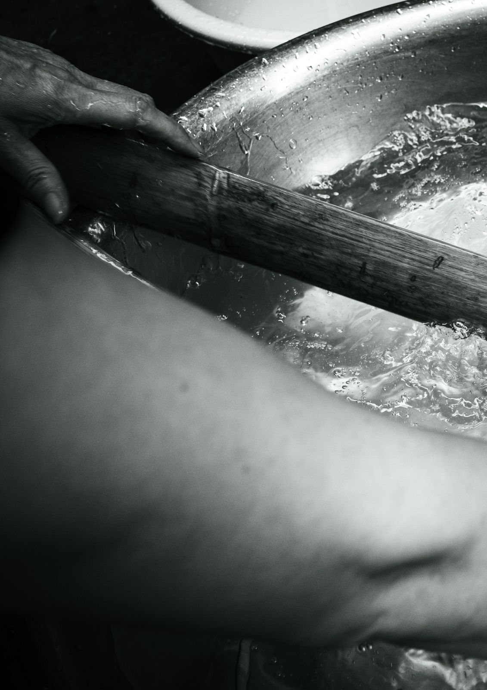
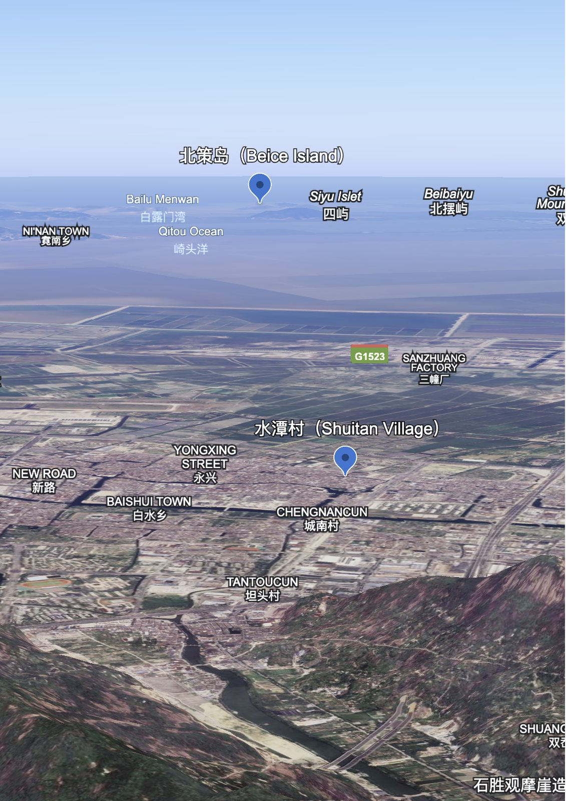
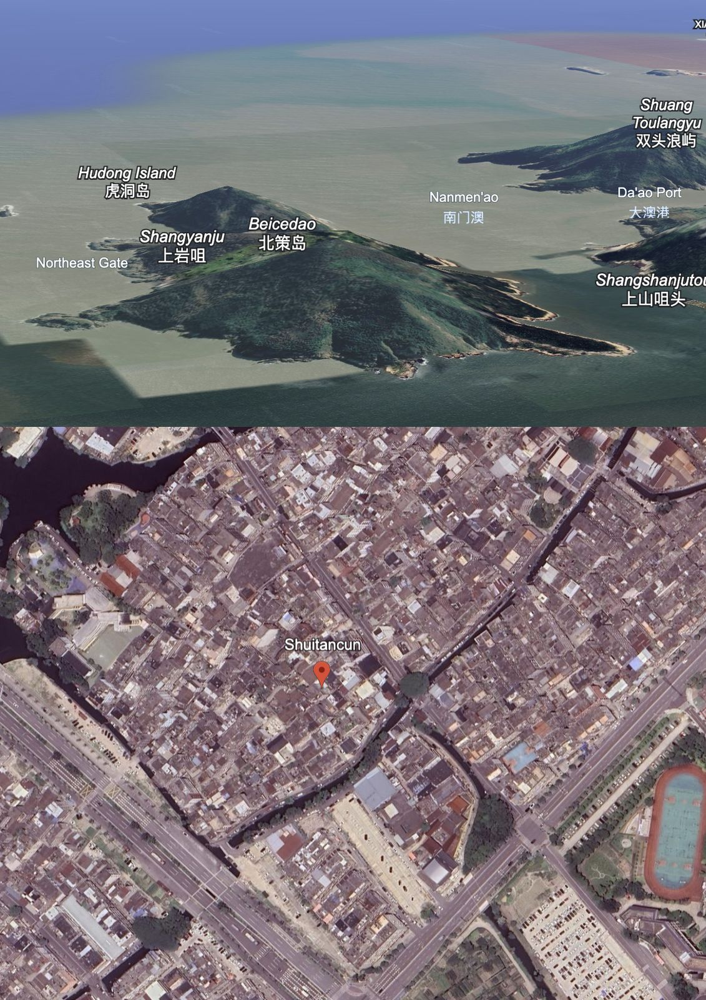
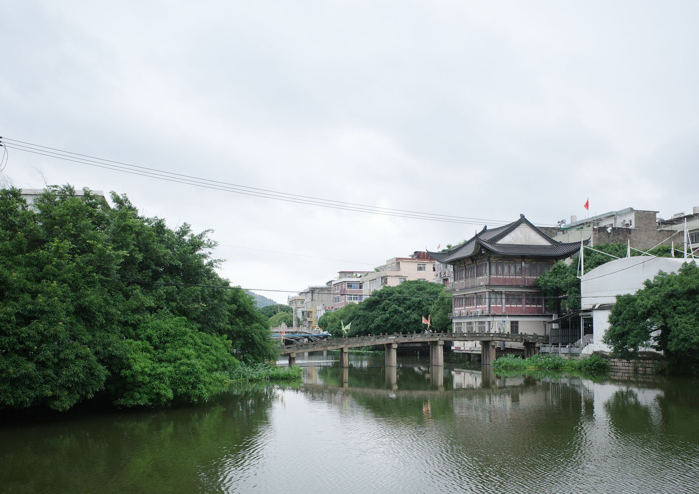
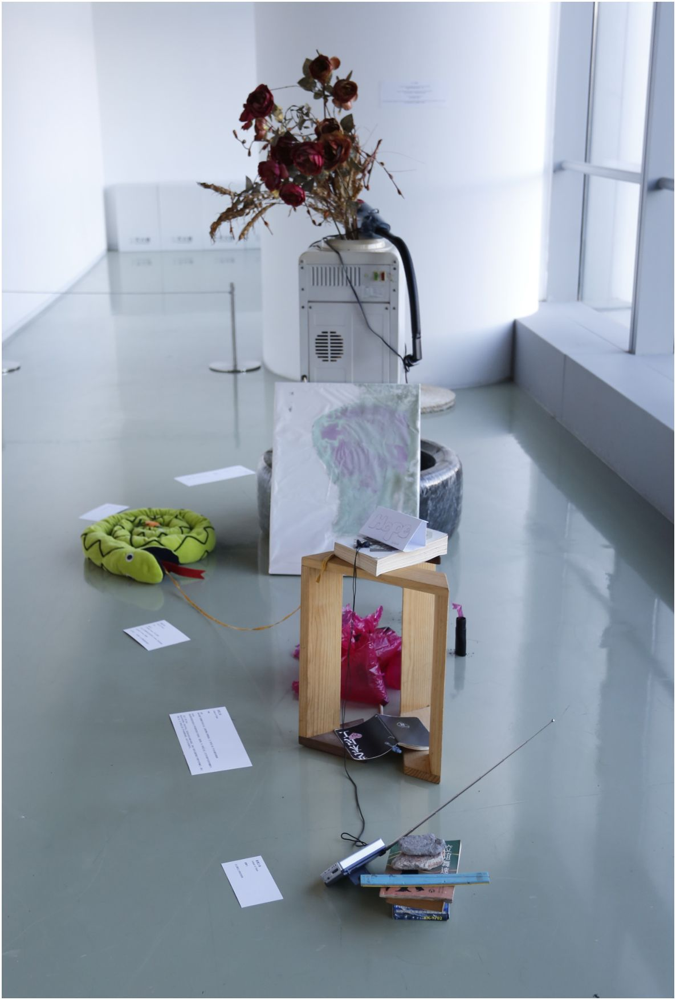
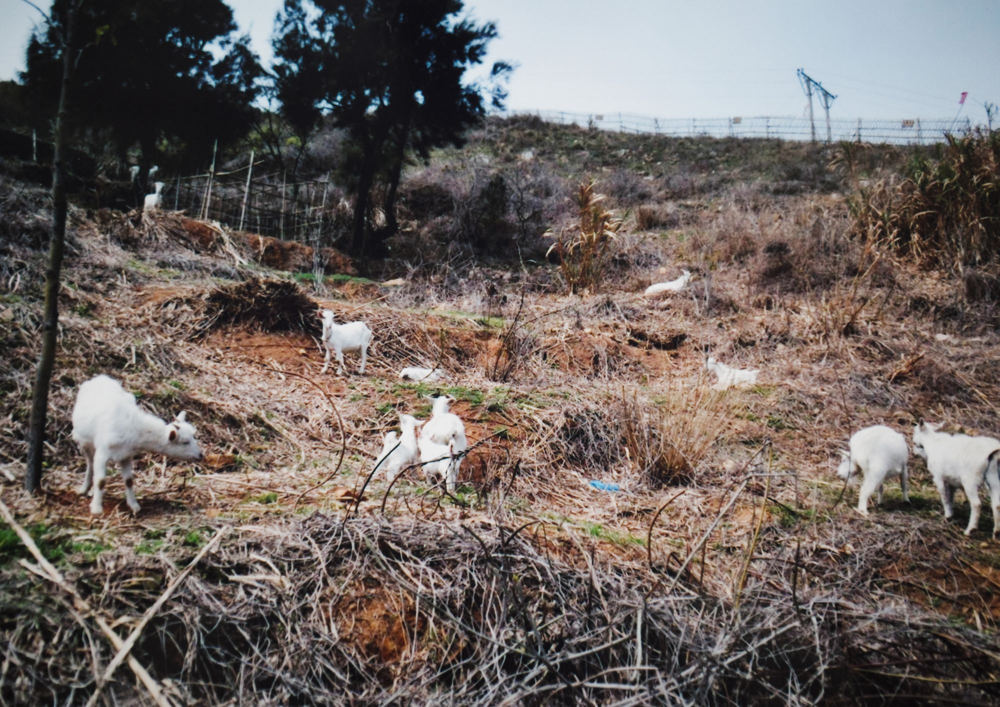
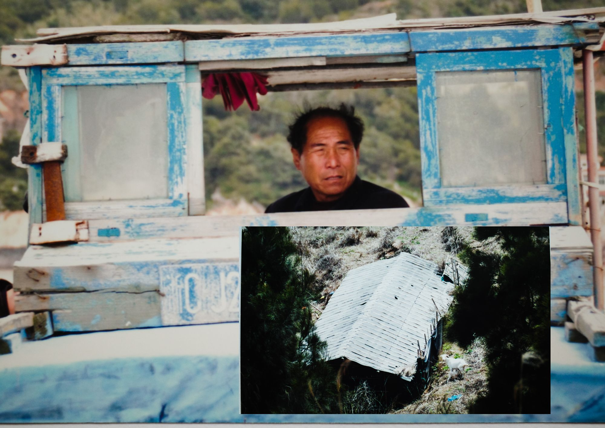
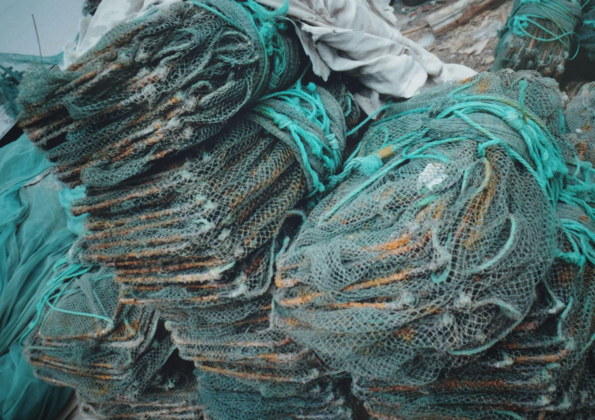
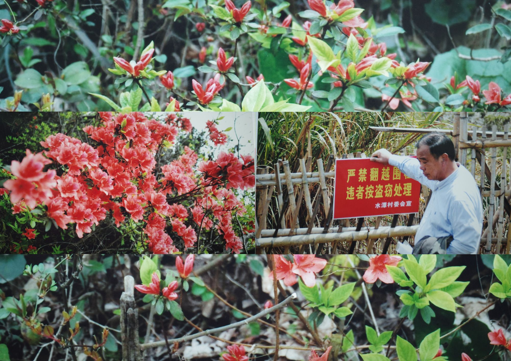
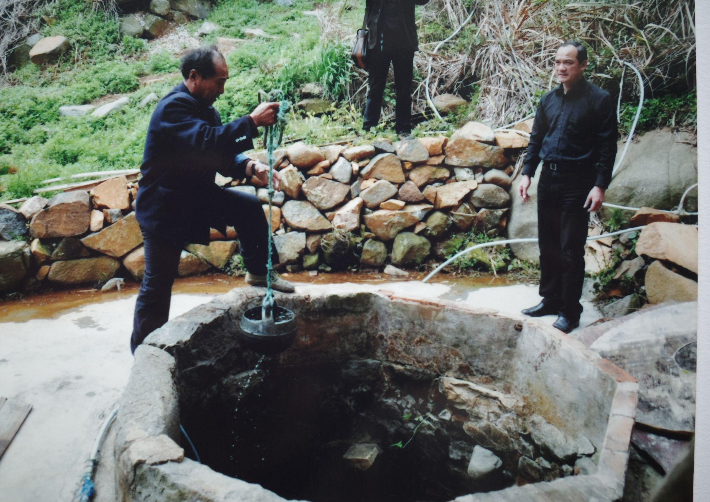

Writing . Remarks on Shuitan Village & The Jelly Troupe



图像来自谷歌地球Images from Google Earth
（温州）李浦王氏望族。据1979年三槐堂木活字本（温州）《李浦王氏宗谱》记载：李浦王氏始迁祖王彦觉，号贞庵，南宋初自汴京迁居浙江永嘉县锦春里，后则转徙居同邑李浦村（今属温州市龙湾区）。
— 浙江温州龙湾地区明代的著姓望族及其对社会经济文化之作用与影响述略，吴仁安
The Wang lineage of Lipu (Wenzhou) is a prominent local clan. According to the Genealogy of the Wang Clan of Lipu (Wenzhou), printed in 1979 using the Sanhuaitang wooden movable-type edition, the founding ancestor of the Lipu Wang clan was Wang Yanjue, styled Zhen’an. In the early Southern Song dynasty, he migrated from Bianjing to Jinchun Ward in Yongjia County, Zhejiang, and later relocated to Lipu Village in the same county (now part of Longwan District, Wenzhou).
— Wu Ren’an, A Brief Account of Prominent Ming-Dynasty Lineages in the Longwan Area of Wenzhou and Their Roles and Influence in Social, Economic, and Cultural Life
水潭村位于温州龙湾，依大罗山傍水谭河，村民多为离浦王氏族裔，其捕鱼已有六百年。上世纪八十年代以前，村里会将年仅十三四岁的男孩送往离水潭村划船四个小时之外的北策岛，进行三到四年的海上生存训练。北策岛位于洞头，因为丰富的淡水资源和临海的地理位置成为水潭村的捕鱼根据地，繁盛时曾有数百村民居住在岛上。
Shuitan Village is located in Longwan, Wenzhou, leaning against Mount Daluo and bordering the Shuitan River. Most of its villagers are descendants of the Lipu Wang clan, and they have engaged in fishing for over six hundred years. Before the 1980s, the village would send boys as young as thirteen or fourteen to Beice Island—reachable only after a four-hour boat journey from Shuitan Village—for three to four years of maritime survival training. Beice Island, located in Dongtou, became Shuitan Village’s fishing base due to its abundant freshwater resources and coastal geography. At its height, several hundred villagers once lived on the island.

《李浦王氏宗谱》有载，明末清初，清顺治年间清军入关之时水潭村王氏兄弟几人，不满异族统治，从水潭村逃离至北策岛定居，捕鱼、垦荒、砍柴、养牛羊……从此之后，水潭村世代有人上北策岛，将这个小小的岛屿作为海上避世“桃花岛”，也作为海上作业根据地。
The Genealogy of the Wang Clan of Lipu records that in the late Ming and early Qing period, during the Shunzhi reign when Qing troops entered the Central Plains, several Wang brothers from Shuitan Village—dissatisfied with foreign rule—fled the village and settled on Beice Island. There they fished, reclaimed land, gathered firewood, and raised cattle and sheep. From that point onward, generation after generation of Shuitan villagers traveled to Beice Island, treating this small island both as a maritime “Peach Blossom Spring,” a refuge from the world, and as a base for offshore labor.
“岩衣胶冻”传承人王爱琴，像她那一代的许多女性，年轻时补渔网、腌制海产、照顾孩子，或加入村里的文艺队，给出海前的渔业大队表演歌舞。
Wang Aiqin, an inheritor of “yanyi jelly,” followed a life path common to many women of her generation. In her youth, she mended fishing nets, pickled seafood, cared for children, or joined the village performance troupe, singing and dancing for the fisheries brigade before boats set out to sea.
“岩衣胶冻”本身，是由渔民从北策岛带回的海藻制成，经过村中几代女性不断试验，从原来的黑色胶装成为如今的半透明的样子。男孩们则学习捕鱼、采佛手螺、搭建房屋、种植几十种中草药。在训练中表现优秀的孩子会被船长挑选上船，其中具胆识和责任的则会被培养为下一代船长。
Yanyi jelly itself is made from seaweed brought back by fishermen from Beice Island. Through continual experimentation by several generations of village women, it evolved from an opaque black gel into its present semi-translucent form. The boys, meanwhile, learned to fish, harvest gooseneck barnacles, build houses, and cultivate dozens of medicinal herbs. Those who performed well in training would be selected by captains to go to sea, and those who demonstrated courage and a sense of responsibility were groomed as the next generation of ship captains.
人物PEOPLE
王建成：岩衣胶冻“非遗”的主要策划与申报者。
Wang Jiancheng: The principal planner and applicant behind yanyi jelly’s designation as Intangible Cultural Heritage.
王建林：老船长，其父是水潭村渔业大队的队长。
Wang Jianlin: A veteran ship captain; his father was the head of Shuitan Village’s fisheries brigade.
季影弟（季奶奶）：村中历史的见证与信息枢纽。
Ji Yingdi (Granny Ji): A witness to the village’s history and a central node of information.
王建鹏：岩衣胶冻产地北策岛的实际经营者。
Wang Jianpeng: The de facto operator of Beice Island, the place of origin of yanyi jelly.
潘定法与王爱琴夫妇：岩衣胶冻非遗手艺的官方继承与经营者。
Pan Dingfa and Wang Aiqin: The officially recognized inheritors and operators of the yanyi jelly Intangible Cultural Heritage craft.
我：郑叶舟，胶冻小组成员，目前居住温州。
Me: Zheng Yezhou, a member of the jelly group, currently based in Wenzhou.
岩衣胶冻旧时由手推车叫卖，一桶装鮸鱼胶冻，一桶装岩衣胶冻。鮸鱼胶冻配调味酱油，咸口；岩衣胶冻配薄荷糖浆，甜口。一甜一咸，这两样颤巍巍的吃食便沿着河巷走遍永强一百零八个村落。鮸鱼胶冻是温州特产，岩衣胶冻则独属水潭村。
In earlier times, yanyi jelly was sold from handcarts. One barrel held mianyu fish jelly, the other held yanyi jelly. The fish jelly was dressed with seasoned soy sauce—savory; the yanyi jelly with mint syrup—sweet. One sweet, one salty: these two quivering foods traveled the river lanes and alleys, passing through all one hundred and eight villages of Yongqiang. Mianyu fish jelly is a Wenzhou specialty; yanyi jelly belongs exclusively to Shuitan Village.
2010年，老船主王建成把“岩衣胶冻”带出了永强。他（半虚构地）编造了它的起源故事，使其被列入地方非物质文化遗产名录。两张牌照应运而生：一张给了潘定法、王爱琴夫妇，另一张给了前副村长家。2009年后，潘王夫妇买断了副村长家的“经验权”，从此王爱琴女士成了岩衣胶冻的官方传人。
In 2010, the former ship owner Wang Jiancheng brought “yanyi jelly” out of Yongqiang. He (half-fictionally) fabricated an origin story for it, which led to its inclusion on the local Intangible Cultural Heritage list. Two licenses were issued as a result: one to the couple Pan Dingfa and Wang Aiqin, the other to the family of a former deputy village head. After 2009, the Pan–Wang couple bought out the deputy village head family’s “experiential rights,” and from then on, Ms. Wang Aiqin became the officially recognized inheritor of yanyi jelly.
在村里走访时，“王建成”是我听得最多的名字。他曾是渔船船长、铁匠，如今是诗人、族谱专家、卡拉OK爱好者，也是王瓒书院（纪念十六世纪本地出生的明代重臣王瓒）的联合创办人。
While visiting the village, “Wang Jiancheng” was the name I heard most often. He had once been a fishing boat captain and a blacksmith; today he is a poet, a genealogy specialist, and a karaoke enthusiast. He is also a co-founder of the Wang Zan Academy, established in memory of Wang Zan, a high-ranking Ming-dynasty official born locally in the sixteenth century.
“您当初怎么想到申请非遗的？”我在王瓒书院二楼的会议室问他。
“我认识市文化局局长，”他说，“他问我：‘王兄，你们村有没有什么能申报的？’我就写了这个岩衣胶冻。还报了王氏春祭。”
“我读到岩衣胶冻有五百年的历史，从村民发现北策岛算起。这是真的吗？我在福建见过类似的。”王建成告诉我：“哎，这不重要。很多东西啊，只要你写下来，两代人之后，大家就信以为真了。”
“他早年靠村里放贷过活，”季奶奶告诉我，“也是村调解员。现在是老年协会会长，负责筹款，主持修路、建老人亭这些事。”
“How did you think of applying for intangible heritage status back then?” I asked him in a meeting room on the second floor of the Wang Zan Academy.
“I know the director of the Municipal Bureau of Culture,” he said. “He asked me, ‘Brother Wang, does your village have anything that could be submitted?’ So I wrote up this yanyi jelly. I also submitted the Wang clan’s Spring Ritual.”
“I read that yanyi jelly has a five-hundred-year history, dating back to when villagers discovered Beice Island. Is that true? I’ve seen similar things in Fujian.”
Wang Jiancheng told me, “Ah, that’s not important. A lot of things—once you write them down, two generations later, everyone will believe they’re true.”
“He used to make a living by lending money in the village,” Granny Ji told me.
“He was also a village mediator. Now he’s the head of the Elderly Association, responsible for fundraising and presiding over things like road repairs and building pavilions for seniors.”
我和陈紫在老人食堂遇见季影弟奶奶。作为村里稀罕的年轻人，我们到哪儿都是焦点，更不用说在满是老人的食堂。季奶奶和另一位老船长坐在我们身后，捧着白米饭配红腐乳，笑眯眯的打量我们。
Chen Zi and I met Granny Ji Yingdi in the elders’ canteen. As rare young people in the village, we drew attention wherever we went—especially in a cafeteria full of elderly villagers. Granny Ji and another former ship captain sat behind us, holding bowls of white rice with red fermented tofu, smiling as they sized us up.
季奶奶十六岁被保送温州师范学校，却因上山下乡回到永强。十八岁出嫁，当过歌舞团员、仪仗队鼓手、鼓词艺人、出纳，中年时走南闯北做生意。她的大儿媳郑丽丽是现任村出纳，带我们看了村里关于北策岛的记录：民国地契、诉讼文书、老照片。
At sixteen, Granny Ji had been recommended for admission to Wenzhou Normal School, but returned to Yongqiang due to the “Up to the Mountains, Down to the Countryside” movement. She married at eighteen. Over the years, she had been a song-and-dance troupe member, a ceremonial band drummer, a guci ballad performer, and a bookkeeper, and in middle age traveled widely doing business. Her eldest daughter-in-law, Zheng Lili, is the current village accountant and took us to see village records related to Beice Island: Republican-era land deeds, litigation documents, and old photographs.
“村里的门道我可清楚，”她说，“以前还负责给村长拉票呢。”
“王建成、王建鹏、潘定法、村委四爷、村长王成泽，您都认识？”
“当然。我们一块儿长大的，谁都认得谁。那时候全村才百来户，现在都有四百户了。那个王成泽就是个小娃娃，他他什么都不懂。”
“I know all the ins and outs of the village,” she said. “I even used to help canvass votes for the village head.”
“You know Wang Jiancheng, Wang Jianpeng, Pan Dingfa, the fourth elder on the village committee, and the village head Wang Chengze?”
“Of course. We grew up together—everyone knows everyone. Back then the whole village had only about a hundred households; now there are four hundred. That Wang Chengze was just a little kid—he doesn’t understand anything.”
比起岩衣胶冻本身，村里更在意它的出处：北策岛。王建成和王成泽都告诉我，最关心北策岛的是王建鹏。
More than the yanyi jelly itself, what the village cares about is its place of origin: Beice Island. Both Wang Jiancheng and Wang Chengze told me that the person most concerned with Beice Island is Wang Jianpeng.
“我认识王建鹏，”我对王建成说，“他以前在渔业公司，开三百吨的船。”
“对，”王建成笑道，“知道为啥不？他舅在渔业公司！不然哥俩哪进得去。”
“I know Wang Jianpeng,” I said to Wang Jiancheng. “He used to work at the fisheries company, captaining a three-hundred-ton ship.”
“That’s right,” Wang Jiancheng laughed. “Know why? His uncle worked at the fisheries company! Otherwise how would the brothers have gotten in?”
我采访过的每个男人的少年时期都在北策岛住过。王建鹏也不例外，不同的是他十六岁考进了温州渔业公司——六十年代全国只有七家渔业公司。王建鹏对此极为自豪，但未提过他舅舅。
Every man I interviewed had spent his boyhood on Beice Island. Wang Jianpeng was no exception, except that at sixteen he tested into the Wenzhou Fisheries Company—one of only seven such companies nationwide in the 1960s. He takes great pride in this, though he never mentions his uncle.
王建鹏如今是温州渔业公司退休职工委员会会长，协助处理遣散员工的养老、日常照料和后事。他也是北策岛现任“岛主”，自建码头、购置渔船，与区、市、省级部门周旋岛屿经营权。岛上的几位赶海老人，也由他照应。
Today, Wang Jianpeng is the head of the Retired Workers’ Committee of the Wenzhou Fisheries Company, helping to handle pensions, daily care, and funerals for laid-off employees. He is also the current “island owner” of Beice Island: he built his own dock, purchased fishing boats, and negotiates with district-, city-, and provincial-level departments over the island’s operating rights. The few elderly people who still forage along the shore of the island are also under his care.
北策岛不知道自己是谁的。水潭村说是他们的，区里说是市里的，市里说是国家的，国家说是大自然的。虽说村里有一纸公文，但是皇帝没了，谁说的好像都不算。
Beice Island does not know who it belongs to.
Shuitan Village says it is theirs; the district says it belongs to the city; the city says it belongs to the state; the state says it belongs to nature. There is, admittedly, an official document in the village—but the emperor is gone, and so whoever speaks seems not to count.
面对一屋子领导，王建鹏一拍桌，我说了算，我的青春我做主。领导表示还得上报领导，特案特办，你的青春是我做主。
Faced with a room full of officials, Wang Jianpeng slammed the table: I decide. My youth, my call. The officials replied that it still had to be reported upward, handled as a special case—your youth is my call.
于是不仅岛不知道是谁的，青春也不知道是谁的了。
And so not only does the island not know who it belongs to, youth does not know either.
主权问题既敏感又莫名其妙，通常涉及多方利益，但在北策岛问题上，只涉及了水潭村的利益。作为在岛上捕鱼了几百年的村子，就算没鱼了，但是岛上有淡水有风情还可以看海豚，可以搞旅游。
Questions of sovereignty are both sensitive and absurd, usually involving many competing interests. But in the case of Beice Island, only the interests of Shuitan Village are at stake. The village has fished these waters for hundreds of years. Even if the fish are gone, the island still has freshwater, scenery, dolphins offshore—it could be developed for tourism.
水潭村是永强一百零八个村子里唯一的的渔村，从明朝开始上北策岛捕鱼，盛时有三百户岛民，可到中华人民共和国了他们都没有人在户口本上写北策岛。2013年出台海洋法，北策岛成为无人居住岛，科学家勘探后总结水土流失严重，禁止经营开发。
Shuitan Village is the only fishing village among Yongqiang’s 108 villages. Since the Ming dynasty, its people have gone to Beice Island to fish. At its peak, there were three hundred households living on the island. Yet even after the founding of the People’s Republic of China, no one ever had “Beice Island” written into their household registration. In 2013, the Maritime Law was enacted; Beice Island was designated an uninhabited island. After scientific surveys concluded that soil erosion was severe, all commercial development was prohibited.
但是王建鹏，留在岛上赶海的老人不在意这些，他的牛阿，猪阿，羊阿也不管这些，该吃吃该拉拉，他们只知道有人来抓就撒腿跑。微观上叫刁民，宏观上叫practice civil disobedience。
But Wang Jianpeng, and the elderly people who still forage along the shore, do not care about any of this. Neither do his cattle, pigs, or goats. They eat when it’s time to eat, shit when it’s time to shit; they only know that when someone comes to catch them, they run. On the micro level, this is called being a troublemaker; on the macro level, it’s called practicing civil disobedience.
王对我大侃，他买了一艘破船，专门来往北策岛，并且老是被捕，但他不怕，因为岛是他的。我问他你知道梭罗吗，他说是的在岛上有很多可以唆的佛手螺。
…
Wang talked to me at length. He bought a dilapidated boat just to travel back and forth to Beice Island, and gets arrested all the time. He isn’t afraid, because the island is his. I asked him if he knew Thoreau. He said yes—there are plenty of fo shou luo (gooseneck barnacles) on the island that you can pry loose.
…
王不顾儿子的劝阻，仍是成天的往岛上跑，他告诉我：“我觉得阿，北策岛应该发展旅游业。我现在把它搞得越来越好，就会有越来越多的人来玩了阿！”王建鹏有着堂吉柯德式的浪漫，但我无法像他那样想象北策岛的未来。
Despite his son’s attempts to dissuade him, Wang still goes to the island every day. He told me, “I think Beice Island should develop tourism. If I keep making it better and better, more and more people will come to visit!” Wang Jianpeng has a Don Quixote–like romanticism, but I cannot imagine Beice Island’s future the way he does.
在季奶奶眼里王是瞎折腾的。在她的拜佛小房间里同时供着国家领导人夫妻的海报和观音菩萨，提到她老伴时，只来了一句“阿弥陀佛，还是国家好。”季奶奶18岁嫁到水潭村，丈夫听上去也不是她选的。老伴去世后她专注于“三句半”（温州方言演绎形式）和念佛，从未插手过北策岛的事宜。
In Granny Ji’s eyes, Wang is just making a fuss for nothing. In her small room for worship, posters of a national leader and his wife hang alongside Guanyin. When her late husband is mentioned, she offers only a single line: “Amitabha—still, the state is good.” Granny Ji married into Shuitan Village at eighteen; her husband, it seems, was not of her choosing. After his death, she devoted herself to san ju ban (a Wenzhou dialect performance form) and Buddhist chanting, never once involving herself in matters concerning Beice Island.
我看到的北策岛属于现在，属于他的“白日梦”，就像水潭村属于现在，属于季奶奶嘴里“什么都不懂的小娃娃村长王成泽”，属于新搬进来的那三百户新水潭村人和他们的下一代，他们没有航过海，也不会梦到北策岛。
The Beice Island I see belongs to the present, to Wang’s “daydream.” Just as Shuitan Village belongs to the present—to the “little kid who doesn’t understand anything,” village head Wang Chengze, in Granny Ji’s words; to the three hundred newly arrived households of New Shuitan Village and their children. They have never crossed the sea, and they will not dream of Beice Island.
水潭村人聚集在北策岛，用几百年的生活编织了它的形象，尔后四散而去，成了一个物件的相聚、摆置后被遗落下来的临时性场景，留在了上一代水潭人的心里。
The people of Shuitan Village once gathered on Beice Island, weaving its image through centuries of daily life. Then they scattered. What remains is like a temporary scene formed by objects brought together, arranged, and then abandoned—lingering only in the hearts of the previous generation of Shuitan villagers.
我想到Maggie，Maggie是《关于岛的想象》工作坊的参与者。那时Maggie刚来到温州—她生于台北，来温之前她在伦敦生活。她和我说：“I always try not to possess things in life。”（我没有保留物件的习惯）。那时候她带来了，一支笔，一个路上捡到的萝卜小人，线。她参与做的那座岛的名字叫“希望之岛”。
I think of Maggie. Maggie was a participant in the Imagining the Island workshop. She had just arrived in Wenzhou then—born in Taipei, she had lived in London before coming. She told me, “I always try not to possess things in life.” At the time, she brought with her a pen, a little radish figurine she had picked up on the road, and some string. The island she helped make was called Island of Hope.

相较于西尔维娅·温特（Sylvia Wynter ），爱德华·格里桑（Édouard Glissant）的书写状态显然更偏爱“白日梦”。
尽管二者都围绕“重新想象”展开写作，温特的书写更依赖于清晰的结构。来自欧洲殖民的加勒比群岛，二人从“岛”与“海洋”的历史来解构欧洲中心体系，从而去讨论“主体性”。
Compared to Sylvia Wynter, Édouard Glissant’s mode of writing more clearly favors a state of “daydreaming.” Although both thinkers write around the idea of “reimagining,” Wynter’s work relies more heavily on clear structure. Emerging from Caribbean islands shaped by European colonialism, both thinkers dismantle Eurocentric systems through the histories of the “island” and the “ocean,” in order to engage questions of subjectivity.
而“岛”，也是永强人对过去水潭村的描述。
The “island,” too, is how people from Yongqiang describe the past of Shuitan Village.
水潭村可被看作近代中国在西方发展模型影响之下的缩影：温州渔业公司时期渔民的职业转型（海洋经济语境中近海资源的枯竭）、瓯飞工程所带来的大规模填海、作为“非遗”被纳入旅游经济的地方技艺、潘定法对岩衣胶冻的出口与经营，围垦地为“中国眼谷”提供的产房土地租赁，以及城镇化进程中对村庄实施的网格化管理，等等。
Shuitan Village can be seen as a microcosm of modern China under the influence of Western development models: the occupational transformation of fishermen during the era of the Wenzhou Fisheries Company (amid the depletion of nearshore resources in a marine economic context); the large-scale land reclamation brought about by the Oujiang Reclamation Project; local techniques absorbed into the tourism economy under the label of “intangible cultural heritage”; Pan Dingfa’s export and commercial operation of yanyi jelly; the leasing of reclaimed land as maternity facilities for the “China Eye Valley”; and the grid-based governance imposed on the village through the process of urbanization, among other developments.
加勒比群岛被纳入欧洲体系的历史照进了北潭村与岩衣胶冻的现实。为此，我从二者形而上的理论，构建创作方法，用面对面的田野采访去对抗当代艺术中暧昧不清视角和冰冷的的后人类主义美学。
The history of the Caribbean islands’ incorporation into European systems finds its reflection in the reality of Beitan Village and yanyi jelly. Drawing from the metaphysical theories of these thinkers, I construct my own method of making—using face-to-face field interviews to counter the ambiguous viewpoints and cold posthumanist aesthetics that often characterize contemporary art.
虽然形而上，“白日梦”并非逃离现实的幻想。它是一个集体症状，也可以是发呆，出神，躺下来睡个觉。我用“白日梦”这个词，是寄情于在田野和创作过程中遇到的各个人的“重新想象”和出神。
Although metaphysical, “daydreaming” is not an escape from reality. It is a collective symptom; it can also be spacing out, drifting, lying down to take a nap. I use the word “daydream” to gesture toward the moments of “reimagining” and absent-mindedness I encountered in people throughout my fieldwork and creative process.
老船长王建林曾带我去看村里的渔船模型。这位面容坚毅，不苟言笑的老人，是被季影弟、季奶奶从河边榕树下的纳凉地一路“揪”过来的。起初他有些寡言，在季奶奶的调侃中才逐渐松弛下来。他用永强口音的温州话断断续续地讲了许多事情，他的父亲，渔船的型号的区别。有时他会离开一会儿，或是看着水潭河不语，再回来和我续上一些事情。
The former ship captain Wang Jianlin once took me to see the village’s model fishing boats.
With his resolute face and taciturn demeanor, he had been quite literally “dragged over” from the riverside banyan tree—where villagers gather to cool off—by Ji Yingdi and Granny Ji. At first he spoke little, only gradually relaxing under Granny Ji’s teasing. In Yongqiang-accented Wenzhou dialect, he spoke haltingly about many things: his father, the differences between types of fishing vessels. At times he would step away, or fall silent while gazing at the Shuitan River, before returning to resume the conversation.
潘定法回忆往事的样子和王建林很像。我与潘的第一次访谈是在他寺前街的岩衣胶冻店里。对话总是被他的沉默所打断——潘会望着屋外的雨，停留在一段回忆之中；二人仿佛在回忆时经过一座连接过去与现在的桥时，驻足，目光停留在了远处的水。
Pan Dingfa recalls the past in much the same way as Wang Jianlin. My first interview with Pan took place in his yanyi jelly shop on Simenqian Street.
Our dialogue was repeatedly interrupted by his silences—Pan would look out at the rain beyond the shop and linger within a memory. It was as if, while crossing a bridge connecting past and present, both men paused, their gaze settling on distant water.
格里桑将这片水域概念化为“共同之地”（Common Place）。在笼统说法下的文化想象中，“开放的水域”常常被视为一个脱离时间的临界空间（Liminal Space）。在“共同之地”里，记忆、劳动与历史不再线性展开，而是以停顿、回望与白日梦的方式浮现。
Glissant conceptualizes such waters as a “Common Place.” In generalized cultural imaginaries, “open waters” are often understood as a liminal space detached from time. Within the “Common Place,” memory, labor, and history no longer unfold linearly; instead, they surface through pauses, retrospection, and daydreams.
“胶冻小组”的对岩衣胶冻的认知通过四个距离展开。第一段距离来自于水潭村村民与村子的距离，并由向我们讲述水潭故事的人们承载：制作胶冻的王阿姨与潘叔，老船长王建林、王建成、王建鹏，村长王成泽，以及村中两代会计季影弟、郑丽丽等人。在他们的叙述中，交织着自个儿与水潭村的过去、现在与未来。
The “Jelly Troupe” experiences Rockcoat Jelly through four layers of distance.
The first distance lies between the villagers and the village itself, embodied by those who share their stories with us—Auntie Wang and Uncle Pan, Captain Wang Jianlin, Wang Jiancheng, Wang Jianpeng, Village Head Wang Chengze, and two generations of village accountants, Ji Yingdi and Zheng Lili. In their words, the past, present, and imagined future of Shuitan are interwoven with personal memory.
第二段距离来自郑叶舟与陈紫，我们尝试从温州在地走进水潭村。第三段距离来自目前在芝加哥的卡密尔和在墨西哥和德克萨斯之间穿行的胡安与水潭村的距离，他们根据记录的材料和叙述来了解温州，水潭，岩衣胶冻。
The second distance is from Chen Zi and myself, Zheng Yezhou, as we approach Shuitan from elsewhere in Wenzhou.
The third is from Camille, currently in Chicago, and Juan, moving between Mexico and Texas—both of whom are learning about Wenzhou, Shuitan, and Rockcoat Jelly through documentation and storytelling.
第四段距离来自审视人与海之间的隔阂。渔业，填海，在精神与地理上，人的生活空间与海的日渐遥远。胶冻小组的驻地体验正是四个距离上，四个人的目光在胶冻里折射，成为落在白墙上的斑影。
The fourth distance reflects a broader detachment between people and the sea.
Through fishing, land reclamation, and shifting geographies—both physical and spiritual—our living spaces have drifted away from the ocean.
不透明性（含混之处）可以共存并汇聚，织就一张织物。要真正理解这些，必须专注于织物的纹理，而非其组成部分的本质。自我与他者的思维在此不再是对立的。每一个他者都是公民，而不再是野蛮人。此地如彼地，皆为开放。
— 爱德华·格里桑
Opacities can coexist and converge, weaving fabrics. To understand these truly one must focus on the texture of the weave and not on the nature of its components. Thought of self and thought of other here become obsolete in their duality. Every Other is a citizen and no longer a barbarian. What is here is open, as much as this there.
— Édouard Glissant
我相信研究一个“物”和其背后文化需要承认某种混乱和不可了解。它的历史非我的历史, 且真实并不活在过去。为了“看见”，而非“掌握”，必须将它交予“敞开”之处。这个被称作“敞开”的空间，在原子层面上是一个根茎式的结构——由胶冻组成员的凝视路径编织而成。其中充满了摩擦的残留物、磨损的痕迹、引力碰撞的印记——这些物质见证了生成、融合与冲撞的过程。在这里，岩衣胶冻作为一种乳化剂——它通过降低我们之间这类不可混合之液（如油与水）之间的界面张力，来稳定这场乳化反应，使我们得以混合，并保持混合的状态。胶冻小组的成员之间没有既定的合作方式，也不会以科学的田野论述在纸面上建立客观的个体表达。去完成这个项目，去了解一个我们永远无法切身的文化和本质，真实的可能存在于我们作为独特个体的不同认知过程之间的相互叙述间的“含混”
I believe that studying an “object” and the culture behind it requires embracing a certain confusion and unknowability. Its history is not my own, and truth does not dwell in the past. In order to “see,” rather than to “grasp,” we must give it to the “open.” This “open” is a rhizome-like space at the atomic level—woven by the gaze routes of the Jelly Troupe members. It is filled with residues of friction, traces of abrasion, the collision of gravity— materials that testify to the processes of forming, merging, and clashing. Here, Rockcoat Jelly serves as an emulsifier— stabilizing the emulsion by lowering the interfacial tension between us, the immiscible, like oil and water. It allows us to mix, and to remain mixed. There is no fixed mode of collaboration within the Jelly Troupe. We do not strive for an objective voice through scientific fieldwork or formal statements. To carry out this project—to understand a culture that we can never fully embody—truth may lie in the mutual narrations of our diverse perceptions and the opacity in between.
卡密尔发给我一张她为胶冻小组的演出所做的视频实验。在视频里她围绕着潘叔的一句话，一个手势做了许多模仿。“改变太大了。（The change(of life) is huge）”潘叔说。我想起艾伦.塞库拉。1987年到1995年，艾伦.塞库拉在他的摄影集《鱼的故事》中用相机去记录全球贸易下的工人，港口，货轮之间的关系。“过去，”塞库拉写道，“港口居民被自己的感官所蒙蔽，误以为全球化经济是可以被看见、听见和嗅到的。”而在潘叔的表达中，自己在面对猝不及防的高歌猛进时代的回想成为了一句话，一个手势。
Camille sent me a video experiment she created for a Jelly Troupe performance. In it, she mimicked Uncle Pan’s gesture and repeated his words: “The change is huge.”
I thought of Allan Sekula. Between 1987 and 1995, Sekula used photography to document the relationships between workers, ports, and cargo ships under global trade in his series Fish Story. “In the past,” he wrote, “port residents were misled by their own senses into believing that the global economy could be seen, heard, and smelled.” And in Uncle Pan’s voice, in his hand motion, I too saw a trace of that global era’s abrupt transformation, distilled into a phrase, a gesture.
我在1987年至1995年间创作了作品《鱼的故事》，当时的前提是：在后现代晚期，海洋已经从人们的观念视野中消失了。而现在，我认为必须对这一前提做出某种修正。
— 艾伦·塞库拉，《全球主义的不满与海洋的回归》





照片来自水潭村办公室Photos are provided by Shuitan Village Office
I don’t think I had ever held a fish before; I’ve never been fishing.
我不觉得我真正用手拿过鱼，我也从来没有去钓过鱼。
It feels like how saying something scary can sometimes flop onto the floor.
这种感觉就像说出来的某些可怕的话会“砰”地掉到地上一样。
Especially if you wait too long.
尤其是当你等了太久
Camille Casemier